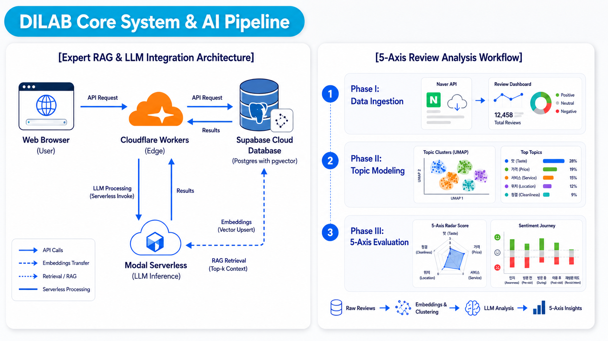
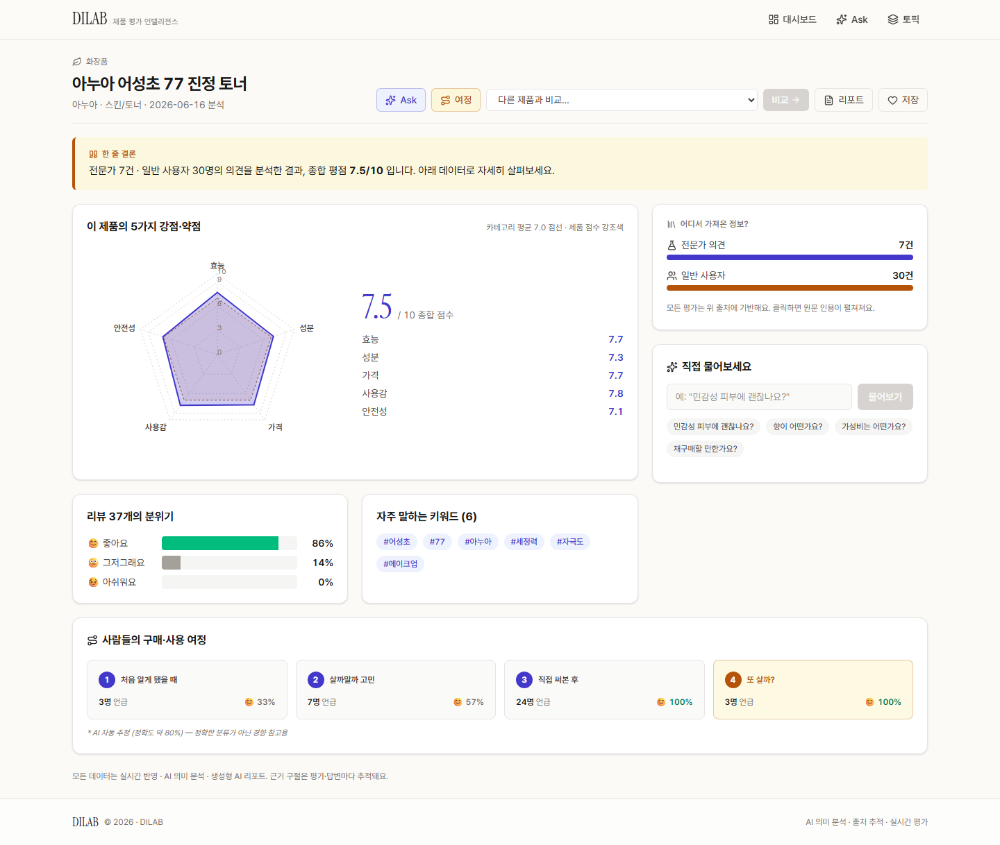
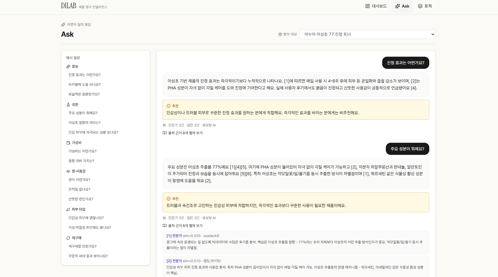

온라인에 축적되는 제품 리뷰의 양이 빠르게 증가하면서, 이를 자동으로 분석하여 제품을 평가하려는 수요가 커지고 있습니다. 그러나 기존의 리뷰 분석 방식은 주로 언급 빈도와 같은 양적 지표에 의존하기 때문에, 분석 결과가 어떤 근거에서 도출되었는지 확인하기 어렵고 도메인 전문성이 충분히 반영되지 못한다는 한계가 있습니다.
본 연구는 본 연구실과 소비자 리서치 전문기업 딥인사이트랩의 협력으로, 소비자 리뷰와 전문가 리뷰를 함께 활용하는 검색 증강 생성(RAG, Retrieval-Augmented Generation) 기반 제품 평가 시스템 DILAB을 개발합니다. 리뷰 텍스트를 임베딩하여 벡터 데이터베이스로 구축한 뒤, 토픽 모델링과 대규모 언어 모델(LLM)을 결합하여 제품에 대한 다측면 분석과 근거 기반 응답을 제공합니다. 특히 모든 분석 결과를 원문 근거와 연결함으로써, 분석의 신뢰성과 추적 가능성을 확보하는 것을 목표로 합니다.

소비자 리뷰와 전문가 리뷰를 함께 수집한 뒤, 문서를 일정한 단위(청크)로 분할하고 다국어 임베딩 모델을 이용하여 벡터로 변환합니다. 변환된 벡터는 벡터 데이터베이스에 저장하며, 전문가 출처와 소비자 출처를 구분하여 이후 검색 단계에서 전문가 근거를 우선적으로 반영할 수 있도록 합니다.
임베딩된 리뷰를 군집화하여 주요 토픽을 자동으로 추출하고, 대규모 언어 모델을 이용하여 각 리뷰의 카테고리, 감성(긍정·중립·부정), 소비자 구매 여정 단계(인지-검토-사용-재구매)를 분류합니다. 분석에 필요한 도메인 정의를 코드가 아닌 설정값으로 분리하였기 때문에, 분석 로직을 그대로 유지한 채 대상 도메인만 교체할 수 있습니다.

사용자가 자연어로 질문하면 질문을 임베딩하여 전문가·소비자 근거를 함께 검색하고, 대규모 언어 모델이 이를 바탕으로 답변을 생성합니다. 이때 답변에는 참조한 원문 근거가 함께 제시됩니다. 또한 동일한 근거를 종합하여 제품을 다섯 개 축으로 평가하며, 각 점수에는 평가의 근거가 된 원문을 연결합니다.

현재 제품명 입력부터 리뷰 수집·분석·평가·질의응답에 이르는 전 과정을 자동으로 수행하는 시제품을 구현하였으며, 클라우드 환경에서 상시 동작하도록 구성하였습니다. 앞으로 분석 대상 제품과 도메인을 확대하여, 소비자와 전문가 리뷰 근거에 기반한 신뢰성과 도메인 확장성을 정량적으로 검증할 계획입니다.